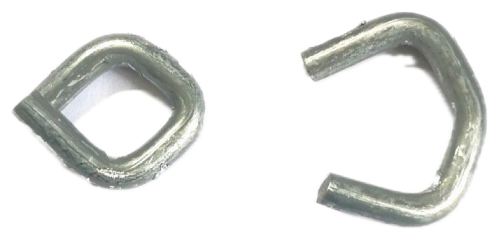
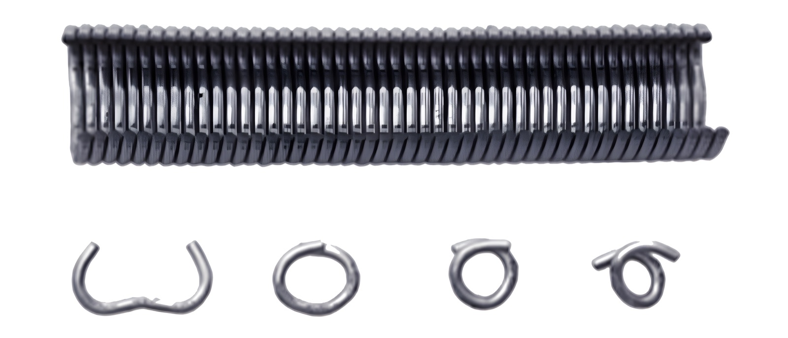
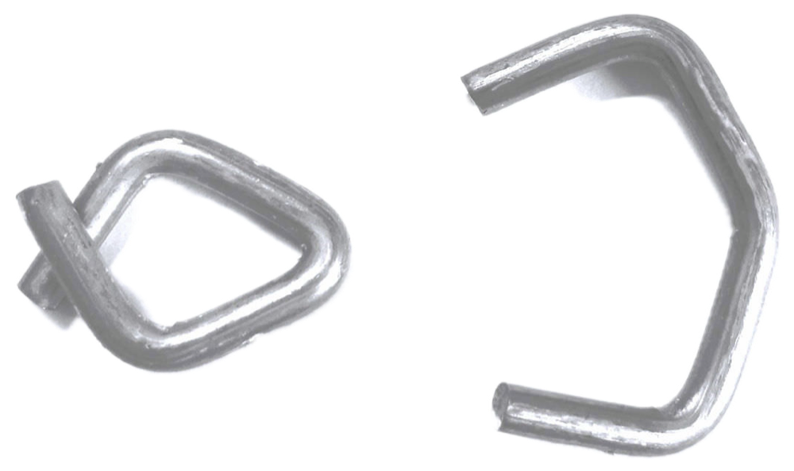
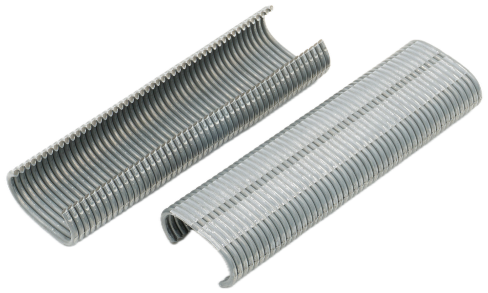
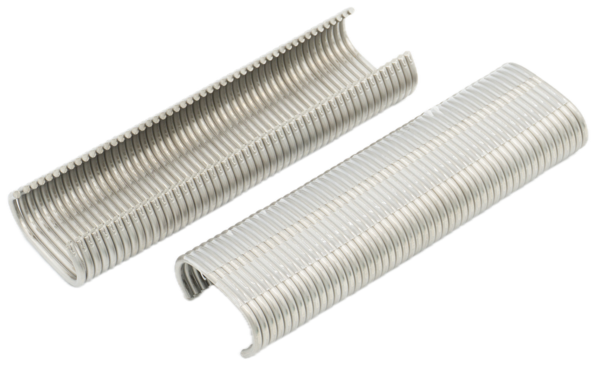

Gabionenring CL 28
Die Ringe CL 28 werden hauptsächlich im Gabionenbau eingesetzt. Sie umschließen bis zu zwei Stäbe eines Gabionengitters und werden deshalb meist zur Verbindung zweier Einheiten verwendet.
Passende Ringzangen: AS 900
Unsere Ringmagazine bestehen aus jeweils 50 Ringen und sind in allen angegebenen Ringsorten und Materialqualitäten kurzfristig aus unserem Lager lieferbar.
Die Ringmagazine der Nr. 1 gibt es in vier Ausführungen. Jedes Magazin besteht aus 50 Ringen.

| Best.-Nr. | Drahtbeschaffenheit | Drahtstärke | min. Innen-Ø | max. Innen-Ø | Zugbelastung |
|---|---|---|---|---|---|
| 1za | Zink-Aluminium-Legierung, min. 200 g/m² | 2 mm | 3 mm | 9 mm | 320 N |
| 1aa | Doppelt verzinkt, min. 80 g/m² | 2 mm | 3 mm | 9 mm | 320 N |
| 1p | Verzinkt, Kunststoff, grün | 1,8/2 mm | 3 mm | 9 mm | 250 N |
| 1b | Edelstahl DIN 1.4301 | 2 mm | 3 mm | 9 mm | 350 N |
Kleinpackung 1.000 Stück · Großpackung bis 30.000 Stück
Die Ringmagazine der Nr. 2 gibt es in vier Ausführungen. Jedes Magazin besteht aus 50 Ringen.

| Best.-Nr. | Drahtbeschaffenheit | Drahtstärke | min. Innen-Ø | max. Innen-Ø | Zugbelastung |
|---|---|---|---|---|---|
| 2a | Zink-Legierung, min. 50 g/m² | 1,3 mm | 2 mm | 7 mm | 120 N |
| 2p | Verzinkter Draht 1,1 mm, Kunststoff 0,1 mm | 1,1/1,3 mm | 2 mm | 7 mm | 90 N |
| 2c | Aluminium AlMgSi 0,5 | 1,3 mm | 2 mm | 7 mm | 60 N |
| 2b | Edelstahl DIN 1.4301 | 1,3 mm | 2 mm | 7 mm | 130 N |
Kleinpackung 2.500 Stück (Best.-Nr. 2c: 5.000 Stück) · Großpackung bis 60.000 Stück
Passende Ringzangen: AS 200 M16, AS 4000, AS 200
Die Ringmagazine der Nr. 3 gibt es in den folgenden Ausführungen. Jedes Magazin besteht aus 50 Ringen.
| Best.-Nr. | Drahtbeschaffenheit | Drahtstärke | min. Innen-Ø | max. Innen-Ø | Zugbelastung |
|---|---|---|---|---|---|
| 3za | Zink-Legierung, min. 50 g/m² | 2 mm | 3 mm | 9 mm | 320 N |
| 3p | Verzinkter Draht 1,8 mm, Kunststoff 0,1 mm; grün, grau, schwarz | 1,8/2 mm | 3 mm | 9 mm | 250 N |
| 3c | Aluminium AlMgSi 0,5 | 2 mm | 3 mm | 9 mm | 160 N |
| 3b | Edelstahl DIN 1.4301 | 1,3 mm | 3 mm | 9 mm | 350 N |
Kleinpackung 1.000 Stück · Großpackung bis 20.000 Stück

Die Ringe CL 28 werden hauptsächlich im Gabionenbau eingesetzt. Sie umschließen bis zu zwei Stäbe eines Gabionengitters und werden deshalb meist zur Verbindung zweier Einheiten verwendet.
Passende Ringzangen: AS 900

Die Ringe CL 36 werden hauptsächlich im Gabionenbau eingesetzt. Sie umschließen bis zu drei Stäbe eines Gabionengitters und werden deshalb meist zur Verbindung mehrerer Einheiten verwendet.
Passende Ringzangen: AS 900


Sagen Sie uns, mit welcher Ringzange Sie arbeiten. Wir nennen Ihnen die passenden Ringe und liefern kurzfristig ab Lager.